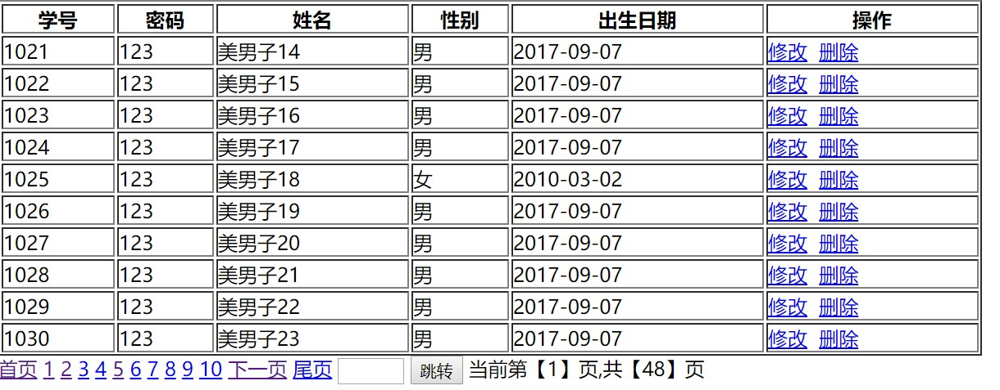
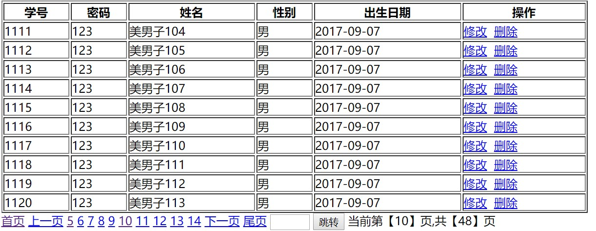

MVC和分页
复习
1、写出Cookie的 2、写出Servlet实现页面跳转的方式 3、写出Servlet的生命周期 4、写出Servlet的两种配置方式 5、写出ServletContext的常用方法
回顾
1、Cookie的使用 2、Session的使用
内容
1、什么是过滤器 2、过滤器链 3、过滤器的优先级和参数 4、过滤器的典型应用 5、什么是监听器 6、常用的监听器
目标
1、熟悉什么是过滤器 2、掌握过滤器链 3、掌握过滤器的优先级和参数 4、掌握过滤器的典型应用 5、熟悉什么是监听器 6、掌握常用的监听器
第一章 MVC模式简介
1.1 MVC的概念
首先我们需要知道MVC模式并不是javaweb项目中独有的，MVC是一种软件工程中的一种软件架构模式，把软件系统分为三个基本部分：模型（Model）、视图（View）和控制器（Controller），即为MVC。它是一种软件设计的典范，最早为Trygve Reenskaug提出，为施乐帕罗奥多研究中心（Xerox PARC）的Smalltalk语言发明的一种软件设计模式
1.2 MVC模式详解
虽然MVC并不是Java当中独有的，但是现在几乎所有的B/S的架构都采用了MVC框架模式，但是MVC在B/S架构中并没有完全地实现，其实我们根本不需要掌握未实现的部分。
- 控制器Controller：控制器即是控制请求的处理逻辑，对请求进行处理，负责请 求转发；
- 视图View：视图即是用户看到并与之交互的界面，比如HTML（静态资源），JSP（动态资源）等等。
- 模型Model：模型代表着一种企业规范，就是业务流程/状态的处理以及业务规则的规定。业务流程的处理过程对其他层来说是不透明的，模型接受视图数据的请求，并返回最终的处理结果。业务模型的设计可以说是MVC的核心。
1.3 MVC高级框架应用
MVC模式被广泛用于Java的各种框架中，比如Struts2、spring MVC等等都用到了这种思想。
Struts2是基于MVC的轻量级的web应用框架。基于MVC，说明基于Struts2开发的Web应用自然就能实现MVC，也说明Struts2着力于在MVC的各个部分为我们的开发提供相应帮助
第二章 JavaWeb的三层架构
2.1 JavaWeb经历三个时期
2.1.1 JSP Model1第一代
JSP Model1是JavaWeb早期的模型，它适合小型Web项目，开发成本低！Model1第一代时期，服务器端只有JSP页面，所有的操作都在JSP页面中，连访问数据库的API也在JSP页面中完成。也就是说，所有的东西都耦合在一起，对后期的维护和扩展极为不利。

2.1.2 JSP Model1第二代
JSP Model1第二代有所改进，把业务逻辑的内容放到了JavaBean中，而JSP页面负责显示以及请求调度的工作。虽然第二代比第一代好了些，但还让JSP做了过多的工作，JSP中把视图工作和请求调度（控制器）的工作耦合在一起了。

2.1.3 JSP Model2
JSP Model2模式已经可以清晰的看到MVC完整的结构了。
JSP：视图层，用来与用户打交道。负责接收用来的数据，以及显示数据给用户；
Servlet：控制层，负责找到合适的模型对象来处理业务逻辑，转发到合适的视图；
JavaBean：模型层，完成具体的业务工作，例如：开启、转账等。

小结:这就是javaweb经历的三个年代，JSP Model2适合多人合作开发大型的Web项目，各司其职，互不干涉，有利于开发中的分工，有利于组件的重用。但是，Web项目的开发难度加大，同时对开发人员的技术要求也提高了。
第三章 MVC结合事务练习
通过结合事务和MVC知识,练习一个转账demo
3.1 项目准备
- 创建web项目
- 导入需要jar包
c3p0-0.9.1.2.jar
commons-beanutils-1.8.3.jar
commons-dbutils-1.4.jar
commons-logging-1.1.1.jar
添加c3p0配置文件
c3p0-config.xml
xxxxxxxxxx<c3p0-config> <!-- 默认配置，如果没有指定则使用这个配置 --> <default-config> <property name="driverClass">com.mysql.jdbc.Driver</property> <property name="jdbcUrl">jdbc:mysql://localhost:3306/day16</property> <property name="user">root</property> <property name="password">222</property> <property name="initialPoolSize">10</property> <property name="maxIdleTime">30</property> <property name="maxPoolSize">20</property> <property name="minPoolSize">5</property> <property name="maxStatements">200</property> </default-config> </c3p0-config> 3.2 编写前端页面
- 转账页面
x<% page language="java" import="java.util.*" pageEncoding="UTF-8"%><%String path = request.getContextPath();String basePath = request.getScheme()+"://"+request.getServerName()+":"+request.getServerPort()+path+"/";%><html> <head> <base href="<%=basePath%>"> <title>My JSP 'transfer.jsp' starting page</title> <meta http-equiv="pragma" content="no-cache"> <meta http-equiv="cache-control" content="no-cache"> <meta http-equiv="expires" content="0"> <meta http-equiv="keywords" content="keyword1,keyword2,keyword3"> <meta http-equiv="description" content="This is my page"> <!-- <link rel="stylesheet" type="text/css" href="styles.css"> --> </head> <body> <form action="${pageContext.request.contextPath }/servlet/AccountServlet" method="post" > 转出方:<input type="text" name="outaccount"/><br/> 转入方:<input type="text" name="intaccount"/><br/> 金额<input type="text" name="money"/><br/> <input type="submit" value="转账"/><br/> </form> </body></html>3.3 准备编写java代码
因为要使用到mvc模式,要对项目代码进行分包
3.3.1 项目分包
com.itqf.dao
com.itqf.service
com.itqf.controller
com.itqf.utils
3.3.2 编写DatasourceUtils工具类
DatasoutceUtils工具类,优化获取连接,优化事务操作
xxxxxxxxxxpackage com.itqf.utils;import java.sql.Connection;import java.sql.ResultSet;import java.sql.SQLException;import java.sql.Statement;import javax.sql.DataSource;import com.mchange.v2.c3p0.ComboPooledDataSource;public class DataSourceUtils { private static ComboPooledDataSource ds=new ComboPooledDataSource(); //-- private static ThreadLocal<Connection> tl=new ThreadLocal<>(); /** * 获取数据源 * @return 连接池 */ public static DataSource getDataSource(){ return ds; } /** * 从当前线程上获取连接 * @return 连接 * @throws SQLException */ public static Connection getConnection() throws SQLException{ //-- 从线程获取链接 Connection conn = tl.get(); if(conn==null){ //第一次获取 创建一个连接 和当前的线程绑定 conn=ds.getConnection(); //----绑定 tl.set(conn); } return conn; } /** * ---释放资源 * * @param conn * 连接 * @param st * 语句执行者 * @param rs * 结果集 */ public static void closeResource(Connection conn, Statement st, ResultSet rs) { closeResource(st, rs); closeConn(conn); } public static void closeResource(Statement st, ResultSet rs) { closeResultSet(rs); closeStatement(st); } /** * 释放连接 * * @param conn * 连接 */ public static void closeConn(Connection conn) { if (conn != null) { try { conn.close(); //----和当前的线程解绑 tl.remove(); } catch (SQLException e) { e.printStackTrace(); } conn = null; } } /** * 释放语句执行者 * * @param st * 语句执行者 */ public static void closeStatement(Statement st) { if (st != null) { try { st.close(); } catch (SQLException e) { e.printStackTrace(); } st = null; } } /** * 释放结果集 * * @param rs * 结果集 */ public static void closeResultSet(ResultSet rs) { if (rs != null) { try { rs.close(); } catch (SQLException e) { e.printStackTrace(); } rs = null; } } /** *---- 开启事务 * @throws SQLException */ public static void startTransaction() throws SQLException{ //获取连接//开启事务 getConnection().setAutoCommit(false);; } /** *--- 事务提交 */ public static void commitAndClose(){ try { //获取连接 Connection conn = getConnection(); //提交事务 conn.commit(); //释放资源 conn.close(); //解除绑定 tl.remove(); } catch (SQLException e) { e.printStackTrace(); } } /** * ----事务回滚 */ public static void rollbackAndClose(){ try { //获取连接 Connection conn = getConnection(); //事务回滚 conn.rollback(); //释放资源 conn.close(); //解除绑定 tl.remove(); } catch (SQLException e) { e.printStackTrace(); } }}3.3.3 编写Dao层代码
dao层进行具体数据库操作
xxxxxxxxxxpackage com.itqf.dao;import java.sql.Connection;import java.sql.PreparedStatement;import java.sql.ResultSet;import java.sql.SQLException;import org.apache.commons.dbutils.DbUtils;import org.apache.commons.dbutils.QueryRunner;import com.itqf.utils.DataSourceUtils;import com.itqf.utils.JdbcUtils;public class AccountDaoDButis{ /** * 转出钱 * @param from * @param money * @throws SQLException */ public void out(String from, String money) throws SQLException { // TODO Auto-generated method stub //创建 queryrunner QueryRunner queryRunner = new QueryRunner(); //编写sql String sql ="update account set money = money - ? where name = ?"; //执行sql //手动传入 queryRunner.update(DataSourceUtils.getConnection(),sql,money,from); //不要调DButils操作 //DbUtils.close(conn); } /* * 转入操作 */ public void in(String to, String money) throws SQLException { // TODO Auto-generated method stub QueryRunner queryRunner = new QueryRunner(); //编写sql String sql ="update account set money = money + ? where name = ?"; //执行sql //手动传入 queryRunner.update(DataSourceUtils.getConnection(),sql,money,to); //不要调DButils操作 }}3.3.4 编写业务层代码
xxxxxxxxxxpackage com.itqf.service;import java.sql.Connection;import java.sql.SQLException;import java.sql.Savepoint;import com.itqf.dao.AccountDao;import com.itqf.dao.AccountDaoDButis;import com.itqf.dao.AccountDaoLocal;import com.itqf.utils.DataSourceUtils;import com.itqf.utils.JdbcUtils;/** * jdbc+threadlocal * * @author Administrator * */public class AccountServiceDButil { /** * 转账业务逻辑 * @param from * @param to * @param money * @throws Exception */ public void transfer(String from, String to,String money) throws Exception { // TODO Auto-generated method stub AccountDaoDButis accountDao = new AccountDaoDButis(); try { //开启事务 DataSourceUtils.startTransaction(); //1.转出 accountDao.out(from,money); int z = 1/0; //2.转入 accountDao.in(to,money); DataSourceUtils.commitAndClose(); } catch (Exception e) { // TODO Auto-generated catch block e.printStackTrace(); DataSourceUtils.rollbackAndClose(); throw e; //接着向外抛 } }}3.3.5 编写servlet代码
xxxxxxxxxxpackage com.itqf.web.servlet;import java.io.IOException;import java.io.PrintWriter;import javax.servlet.ServletException;import javax.servlet.http.HttpServlet;import javax.servlet.http.HttpServletRequest;import javax.servlet.http.HttpServletResponse;import com.itqf.service.AccountService;import com.itqf.service.AccountServiceDButil;import com.itqf.service.AccountServiceLocal;public class AccountServlet extends HttpServlet { public void doGet(HttpServletRequest request, HttpServletResponse response) throws ServletException, IOException { //设置编码格式 request.setCharacterEncoding("UTF-8"); response.setContentType("text/html;charset=UTF-8"); PrintWriter writer = response.getWriter(); //获取表单数据 String from = request.getParameter("outaccount"); String to = request.getParameter("intaccount"); String money = request.getParameter("money"); //调用业务逻辑 AccountServiceDButil accountService = new AccountServiceDButil(); try { accountService.transfer(from,to,money); //分发转向 writer.print("转账成功！"); } catch (Exception e) { // TODO Auto-generated catch block e.printStackTrace(); writer.print("转账失败！"); }; } /** * The doPost method of the servlet. <br> * * This method is called when a form has its tag value method equals to post. * * @param request the request send by the client to the server * @param response the response send by the server to the client * @throws ServletException if an error occurred * @throws IOException if an error occurred */ public void doPost(HttpServletRequest request, HttpServletResponse response) throws ServletException, IOException { doGet(request, response); }}第四章 分页概述
分页是web应用程序非常重要的一个技术。数据库中的数据可能是成千上万的，不可能把这么多的数据一次显示在浏览器上面。一般根据每行数据在页面上所占的空间每页显示若干行，比如一般20行是一个比较理想的显示状态。
4.1 分页实现思路
分页的方法主要有以下两种思路
1.取出符合条件的数据，放到数据集或者内存当中，然后逐页浏览。例如，有可能每页只浏览20条记录，但使用这种分页方法需要把所有记录取出来。这种分页的方法叫做“指针分页或假分页”。
2.对于海量的数据查询，看多少就取多少，显然是最佳的解决方法，假如某个表中有200万条记录，第一页取前20条，第二页取21~40条记录。此时可以使用。
select top 当前页每页记录数查询字段列表 from 表A where 主键字段 not in （select top （当前页-1）当前页记录数主键字段 from 表A）
这样的语句来实现，因为这种查询方式要使用主键，所以叫他做“主键分页”
4.2 分页代码实现
步骤：
1.确定每页显示的数据数量
2.确定分页显示所需的总页数
3.编写SQL查询语句，实现数据查询
4.在JSP页面中进行分页显示设置
代码实现如下:
4.2.1 数据库表语句如下
create database day20_student;
xxxxxxxxxx use day20_student; create table student( studentNo int(4) NOT NULL, loginPwd varchar(20) NOT NULL, studentName varchar(50) NOT NULL, sex char(2) NOT NULL, bornDate datetime ); -- 向数据库中添加100条添加记录4.4.2创建工程和程序包

4.4.3 C3p0配置文件
xxxxxxxxxx <c3p0-config> <default-config> <property name="driverClass">com.mysql.jdbc.Driver</property> <property name="jdbcUrl">jdbc:mysql://localhost:3306/day39_myschool</property> <property name="user">root</property> <property name="password">root</property> <property name="acquireIncrement">5</property> <property name="initialPoolSize">10</property> <property name="minPoolSize">5</property> <property name="maxPoolSize">30</property> </default-config></c3p0-config>4.4.4 创建实体类和工具类
Student类
xxxxxxxxxxpackage com.qf.myschool.domain;import java.util.Date;/** * 学生类 * @author wgy */public class Student { private int studentNo; private String loginPwd; private String studentName; private String sex; private Date bornDate; public Student() { // TODO Auto-generated constructor stub } public Student(int studentNo, String loginPwd, String studentName, String sex, Date bornDate) { super(); this.studentNo = studentNo; this.loginPwd = loginPwd; this.studentName = studentName; this.sex = sex; this.bornDate = bornDate; } public int getStudentNo() { return studentNo; } public void setStudentNo(int studentNo) { this.studentNo = studentNo; } public String getLoginPwd() { return loginPwd; } public void setLoginPwd(String loginPwd) { this.loginPwd = loginPwd; } public String getStudentName() { return studentName; } public void setStudentName(String studentName) { this.studentName = studentName; } public String getSex() { return sex; } public void setSex(String sex) { this.sex = sex; } public Date getBornDate() { return bornDate; } public void setBornDate(Date bornDate) { this.bornDate = bornDate; } public String toString() { return "Student [studentNo=" + studentNo + ", loginPwd=" + loginPwd + ", studentName=" + studentName + ", sex=" + sex + ", bornDate=" + bornDate + "]"; } }PageBean类
xxxxxxxxxxpackage com.qf.myschool.domain;import java.util.List;/** * 页面数据类 * @author wgy * */public class PageBean { //页码 private int pageIndex; //页大小 private int pageSize=10; //总数据据个数 private int totalCount; //总页数 private int pageCount; //页面数据 private List<Student> data; //开始的页码 private int startIndex; //结束的页码 private int endIndex; public int getStartIndex() { return startIndex; } public void setStartIndex(int startIndex) { this.startIndex = startIndex; } public int getEndIndex() { return endIndex; } public void setEndIndex(int endIndex) { this.endIndex = endIndex; } public PageBean(int pageIndex,int totalCount){ this.pageIndex=pageIndex; this.totalCount=totalCount; //计算总页数 pageCount=totalCount%pageSize==0?totalCount/pageSize:totalCount/pageSize+1; //开始页码，结束页码 startIndex=pageIndex-5; endIndex=pageIndex+4; //处理特殊情况 if(pageIndex<=5){ startIndex=1; endIndex=10; } if(pageIndex>=pageCount-4){ startIndex=pageCount-9; endIndex=pageCount; } if(pageCount<=10){ startIndex=1; endIndex=pageCount; } } public int getPageIndex() { return pageIndex; } public void setPageIndex(int pageIndex) { this.pageIndex = pageIndex; } public int getPageSize() { return pageSize; } public void setPageSize(int pageSize) { this.pageSize = pageSize; } public int getTotalCount() { return totalCount; } public void setTotalCount(int totalCount) { this.totalCount = totalCount; } public int getPageCount() { return pageCount; } public void setPageCount(int pageCount) { this.pageCount = pageCount; } public List<Student> getData() { return data; } public void setData(List<Student> data) { this.data = data; }}DbUtils类
xxxxxxxxxxpackage com.qf.myschool.utils;import java.sql.Connection;import java.sql.PreparedStatement;import java.sql.ResultSet;import java.sql.SQLException;import java.sql.Statement;import com.mchange.v2.c3p0.ComboPooledDataSource;import com.mysql.jdbc.SQLError;/** * 1加载驱动 * 2建立连接 * 3释放资源 * 4更新操作 * @author wgy * */public class DbUtils { private static ComboPooledDataSource cbds; static{ cbds=new ComboPooledDataSource(); } public static Connection getConnection() throws SQLException{ if(cbds!=null){ return cbds.getConnection(); } return null; } public static void release(ResultSet rs,Statement stat,Connection conn){ if(rs!=null){ try { rs.close(); } catch (SQLException e) { // TODO Auto-generated catch block e.printStackTrace(); } } if(stat!=null){ try { stat.close(); } catch (SQLException e) { // TODO Auto-generated catch block e.printStackTrace(); } } if(conn!=null){ try { conn.close(); } catch (SQLException e) { // TODO Auto-generated catch block e.printStackTrace(); } } } public static int executeUpdate(String sql,Object...params){ Connection conn=null; PreparedStatement pstat=null; try { conn=getConnection(); pstat=conn.prepareStatement(sql); for (int i = 0; i < params.length; i++) { pstat.setObject(i+1, params[i]); } return pstat.executeUpdate(); } catch (Exception e) { // TODO: handle exception e.printStackTrace(); throw new RuntimeException(e); }finally { release(null, pstat, conn); } }}4.4.5 创建Dao和实现类
StudentDao接口
package com.qf.myschool.dao;
import java.util.List;
import com.qf.myschool.domain.Student;
public interface StudentDao {
/**
*
* @param pageIndex 当前页码 1
* @param pagesize 页大小 10
* @return
*
*/
public List<Student> findByPage(int pageIndex,int pagesize);
//获取总的数据个数
public int getTotalCount();
} StudentDaoImpl类
xxxxxxxxxxpackage com.qf.myschool.dao.impl;import java.sql.Connection;import java.sql.PreparedStatement;import java.sql.ResultSet;import java.util.ArrayList;import java.util.Date;import java.util.List;import com.qf.myschool.dao.StudentDao;import com.qf.myschool.domain.Student;import com.qf.myschool.utils.DbUtils;public class StudentDaoImpl implements StudentDao { public List<Student> findByPage(int pageIndex, int pagesize) { // TODO Auto-generated method stub Connection conn=null; PreparedStatement pstat=null; ResultSet rs=null; List<Student> students=new ArrayList<Student>(); try { conn=DbUtils.getConnection(); pstat=conn.prepareStatement("select * from student limit ?,?"); pstat.setInt(1, (pageIndex-1)*pagesize); pstat.setInt(2, pagesize); rs=pstat.executeQuery(); while(rs.next()){ int studentNo=rs.getInt("studentNo"); String loginPwd=rs.getString("loginPwd"); String studentName=rs.getString("studentName"); String sex=rs.getString("sex"); Date bornDate=rs.getDate("bornDate"); students.add(new Student(studentNo, loginPwd, studentName, sex, bornDate)); } return students; } catch (Exception e) { e.printStackTrace(); throw new RuntimeException(e); }finally { DbUtils.release(rs, pstat, conn); } } public int getTotalCount() { Connection conn=null; PreparedStatement pstat=null; ResultSet rs=null; List<Student> students=new ArrayList<Student>(); try { conn=DbUtils.getConnection(); pstat=conn.prepareStatement("select count(*) from student"); rs=pstat.executeQuery(); int count=0; if(rs.next()){ count=rs.getInt(1); } return count; } catch (Exception e) { e.printStackTrace(); throw new RuntimeException(e); }finally { DbUtils.release(rs, pstat, conn); } }}4.4.6 创建Servie和实现类
StudentService接口
xxxxxxxxxxpackage com.qf.myschool.service;import java.util.List;import com.qf.myschool.domain.PageBean;import com.qf.myschool.domain.Student;public interface StudentService { public PageBean getPage(int pageIndex);}StudentServiceImpl实现类
xxxxxxxxxxpackage com.qf.myschool.service.impl;import java.util.List;import com.qf.myschool.dao.StudentDao;import com.qf.myschool.dao.impl.StudentDaoImpl;import com.qf.myschool.domain.PageBean;import com.qf.myschool.domain.Student;import com.qf.myschool.service.StudentService;public class StudentServiceImpl implements StudentService { private StudentDao studentDao=new StudentDaoImpl(); public PageBean getPage(int pageIndex) { //查询数据库一共多少条数据 int totalCount=studentDao.getTotalCount(); PageBean page=new PageBean(pageIndex, totalCount); List<Student> data=studentDao.findByPage(pageIndex, page.getPageSize()); page.setData(data); return page; }}4.4.7 listStudent.jsp页面
xxxxxxxxxx<% import="com.qf.myschool.domain.PageBean"%><% import="com.qf.myschool.domain.Student"%><% import="com.qf.myschool.service.impl.StudentServiceImpl"%><% import="com.qf.myschool.service.StudentService"%><% page language="java" import="java.util.*" pageEncoding="UTF-8"%><%String path = request.getContextPath();String basePath = request.getScheme()+"://"+request.getServerName()+":"+request.getServerPort()+path+"/";%><html> <head> <base href="<%=basePath%>"> <meta charset="UTF-8"> <title>学生列表</title> <style type="text/css"> #mainbox{ width: 850px;margin: 0 auto;} </style> </head> <body> <div id="mainbox"> <% String pageIndex=request.getParameter("pageIndex"); StudentService studentService=new StudentServiceImpl(); Page p=null; if(pageIndex==null){ p=studentService.getPage(1); }else{ p=studentService.getPage(Integer.parseInt(pageIndex)); } List<Student> students=p.getData(); %> <a href="editstudent.jsp">添加</a> <table border="1" width="800"> <tr> <th>学号</th> <th>密码</th> <th>姓名</th> <th>性别</th> <th>出生日期</th> <th>操作</th> </tr> <% if(students!=null){ for(Student stu :students){ out.println("<tr>"); out.println("<td>"+stu.getStudentNo()+"</td>"); out.println("<td>"+stu.getLoginPwd()+"</td>"); out.println("<td>"+stu.getStudentName()+"</td>"); out.println("<td>"+stu.getSex()+"</td>"); out.println("<td>"+stu.getBornDate()+"</td>"); out.println("<td><a href='editstudent.jsp?studentNo="+stu.getStudentNo()+"'>修改</a> <a href=\"javascript:del("+stu.getStudentNo()+")\">删除</a></td>"); out.println("</tr>"); } } %> </table> <script type="text/javascript"> function del(studentNo){ //alert(studentNo); if(confirm("确定要删除吗?")){ window.location.href='dodel.jsp?studentNo='+studentNo; } } </script> <a href="liststudent.jsp?pageIndex=1">首页</a> <% if(p.getPageIndex()>1){ out.println("<a href='liststudent.jsp?pageIndex="+(p.getPageIndex()-1)+"'>上一页</a>"); } for(int i=p.getStartIndex();i<=p.getEndIndex();i++){ out.println("<a href='liststudent.jsp?pageIndex="+i+"'>"+i+"</a>"); } if(p.getPageIndex()<p.getPageCount()){ out.println("<a href='liststudent.jsp?pageIndex="+(p.getPageIndex()+1)+"'>下一页</a>"); } %> <a href="liststudent.jsp?pageIndex=<%=p.getPageCount() %>">尾页</a> <input type="number" id="pageNum" style="width: 50px" min="1" > <input type="button" value="跳转" onclick="jump()"> 当前第【<%=p.getPageIndex() %>】页,共【<%=p.getPageCount() %>】页 <script type="text/javascript"> function jump(){ //alert('aaa'); var pageNum=document.getElementById("pageNum"); var v=pageNum.value; if(v==null||v.trim()==""){ alert("请输入一个数字"); return; } window.location.href='liststudent.jsp?pageIndex='+v; } </script> </div> </body></html>界面效果如图：


作业题
1、实现一个签到管理系统 要求：注册、登录、签到、签到信息查询